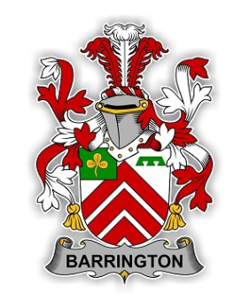

Home
- “If watching a bridge is much more exciting than crossing that bridge, then you can be sure that it is a very beautiful bridge!” ― Mehmet Murat ildan
A Brief History......
The Barrington's of Limerick were an extremely powerful and influential family during the 1800's. This website aims to allow the user get a more historic background on the Barrington's and to see their influence through maps, photos and articles. Their influence can seen to this day in 2018, and we hope the user will leave this website feeling informed and pleased through their interaction with the site. Read more on the history of the Barrington's, here!
Bicentenary Birthday
The parishioners of Clonkeen, Murroe-Boher, Ahane, Castleconnell and Montpelier gathered together to celebrate the unique bicentenary birthday of Barrington's Bridge, County Limerick. Read more here!
Limerick Bridges
Want to find out more about Limerick bridges and the Barrington family influence. Click here!
How to get to Limerick?
Limerick

Get in touch!
-
Press the golden envelope:
Email us here!
or